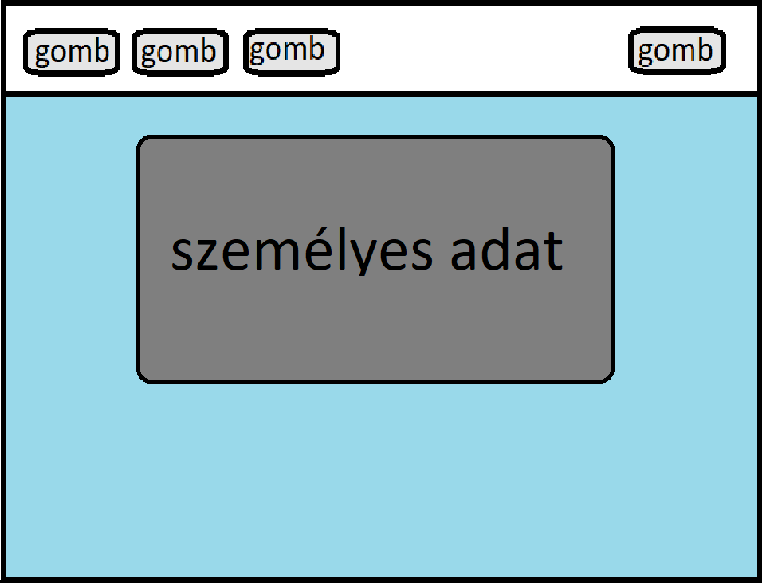

Főoldal
Az oldal teljes mértékben az eredeti ötletet tartalmazza, az ihkletet a minta feladatok adták. A színeket a háttér határozta meg, mondhatni köré épült fel az egész feladat. Már az oldal szerkesztésénél elhatároztam a gombok, és a felső menüsáv tulajdonságait, amik a többi lapon is megjelennek.
Nehézségek
A nehézséget a keret és a szöveg elrendezése okozta. De végül sikerült megoldani.

Rólam
A szöveg hátterén található asszimetrikus lekerekítéseket a feladat végén szerkesztettem meg.
Nehézségek
Az önéletrajzom megfogalmazásán kívül, nem merült fel semmiféle probléma. Talán a háttér és szöveg kapcsolata,hogy együtt mozogjon, és, hogy hol helyezkedjen el.
Elérhetőségek
A személyes adatokat tartalmazó táblázat megszerkesztése után maradtam a letisztut és egyszerű stílus mellett. Egyedül az árnyékot használtam mint díszítő elem.
Nehézségek
Az ikonok megjelenítése és körülvágása volt az ami nehézségeket okozott de végül sikerült. Illetve azok elhelyezése az oldalon.